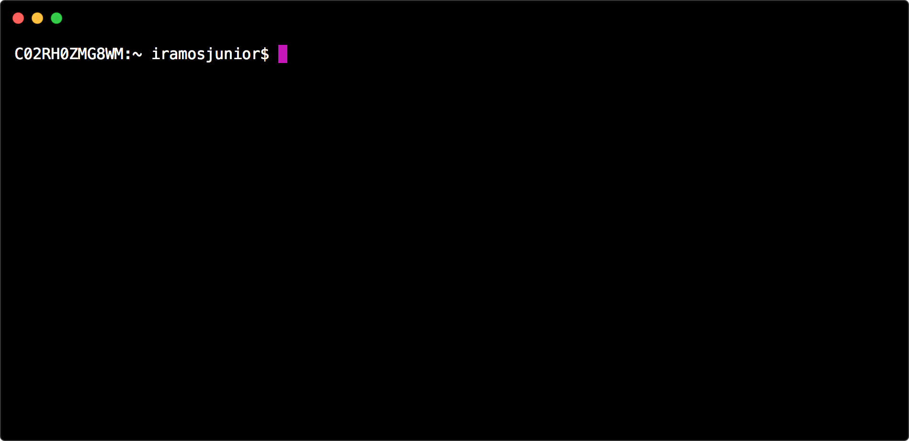
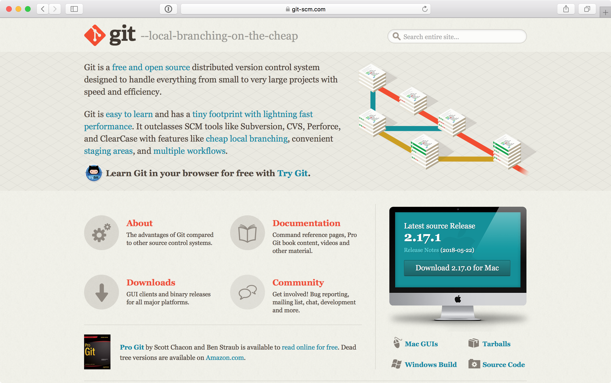
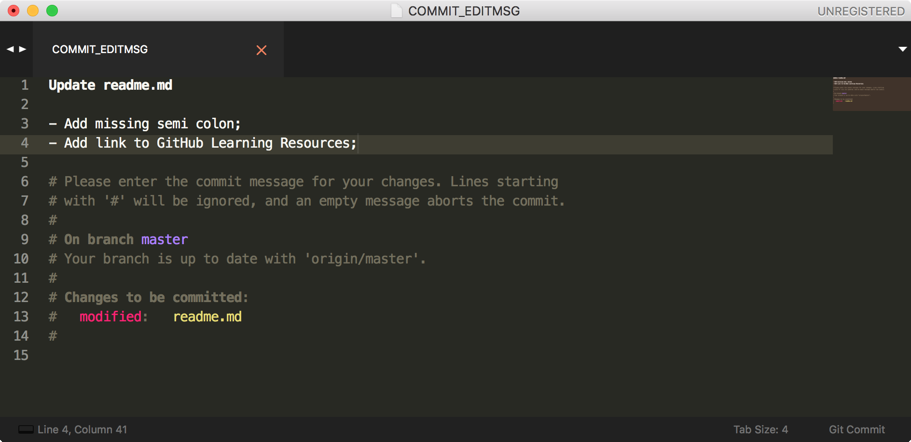
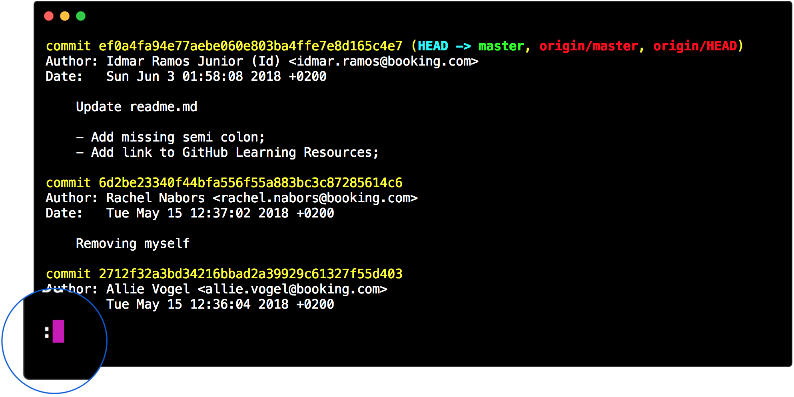
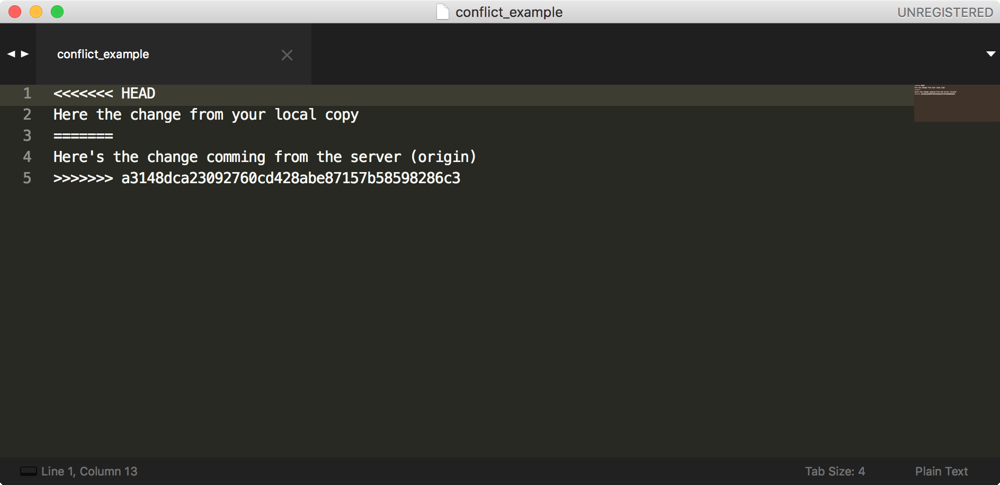
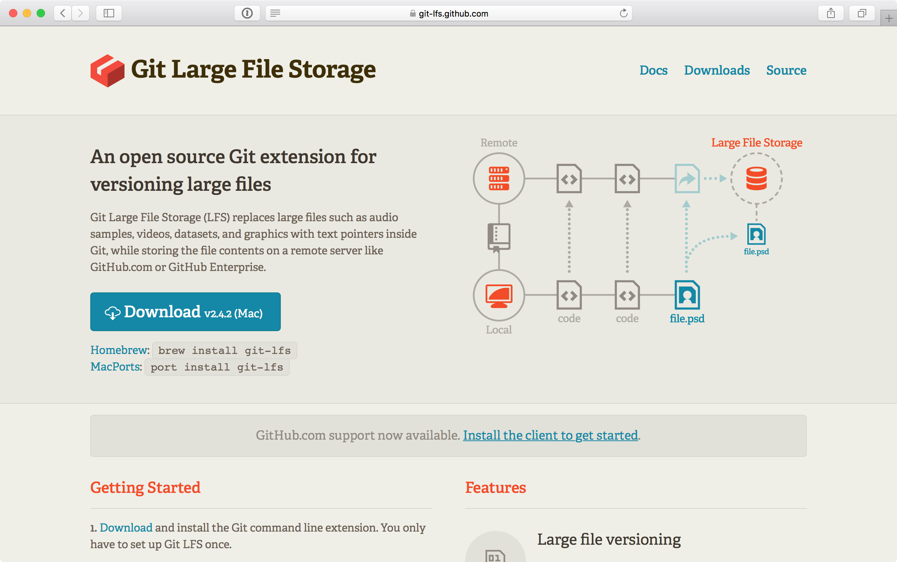

Git for beginners
What we're not going to do
Git is CLI
Command line interface
Terminal basics
The basics of basic
What does this screen mean?
Where am I?
$ pwd
What do I have here?
$ ls
What do I have here?
$ ls -1
Clear the view
$ clear
Change directory
$ cd folder_name
A step back
$ cd ..
Make a directory
$ mkdir folder_name
Create a file
$ touch file_name.txt
Open a file
Mac
$ open file_name.txt

Open a file
Linux
$ xdg-open file_name.txt

Open a file
Windows
$ start file_name.txt
Quick Review
- $ pwd Print the working directory
- $ ls List directories
- $ cd folder_name Change to a named folder
- $ clear Clear the view
- $ mkdir folder_name Creates a new folder
- $ touch file_name Creates a new file
- $ open file_name Open the named file
A brief explanation about
Git is a distributed versioning control system.
Distributed system
Git Server
Git is a diary
It's also a time machine
Do I have git?
$ git --version
Installing git
Clone repository
$ cd ~/Developer
$ git clone https://github.com/idmarjr/beginners-training.git
$ cd git-training
Set your configuration
Name and email
$ git config --global user.name "Your name here"
$ git config --global user.email your@email.com
Colors
$ git config --global color.ui auto
Review your config
$ git config --list
workflow
How's my local copy?
$ git status
Time to work a bit
- Open your repository
- Go to folder 2019/YYYY-MM-DD-training
- Open yourname.md
- Add the follow information about you:
# About me
## Favorite animal:
## Favorite color:
Working copy status
$ git status
What did I change?
$ git diff
Add a file to staging area
$ git add readme.md
Add all modifed files
$ git add .
Working copy status
$ git status
Let's work a bit more
- Add the following information to your_name.md
## Favorite place:
Working copy status
$ git status
Discard changes
Individual file
$ git checkout readme.md
All files
$ git checkout .
Working copy status
$ git status
Unstage changes
$ git reset readme.md
Working copy status
$ git status
Commit changes
The right way
$ git commit
The quick way
$ git commit -m "Explain what you're changing"
Change default editor
Atom
$ git config --global core.editor "atom -n -w”
Sublime
$ git config --global core.editor "subl -n -w”
Editing commit message
Working copy status
$ git status

Before push, first pull
$ git pull
push changes to origin
$ git push
Exploring logs
$ git log
A small detail
Type q to exit git log view
Log options (How)
$ git log --oneline
$ git log --no-decorate
$ git log --graph
Log options (What)
$ git log --reverse
$ git log --author=pedro.marques
$ git log --since=yesterday
Multiple log options
$ git log --oneline --graph --author=pedro.marques
Details of a commit
$ git show [SHA]
Recap
Your local computer
Working Tree
↓
git add
Staging area
↓
git commit
Local Commit
↓
git push
Remote server
Remote repository
Questions?
and then
a few more things
Conflicts
Anatomy of a git conflict
Git LFS
Questions?
One more time.
That's all folks!
Credits
- Icons from The Noun Project
- DeLorean icon created by Aaron Humphreys
- Diary icon created by Notachai Plukjaisuea
- Macbook icon created by Shashank Singh
- Server icon created by Petai Jantrapoon
- Terminal screenshots made using Hyper™
- That's all folks image from Looney Tunes by Warner Bros.
- Conflicts illustration from Calvin and Hobbes by Bill Watterson